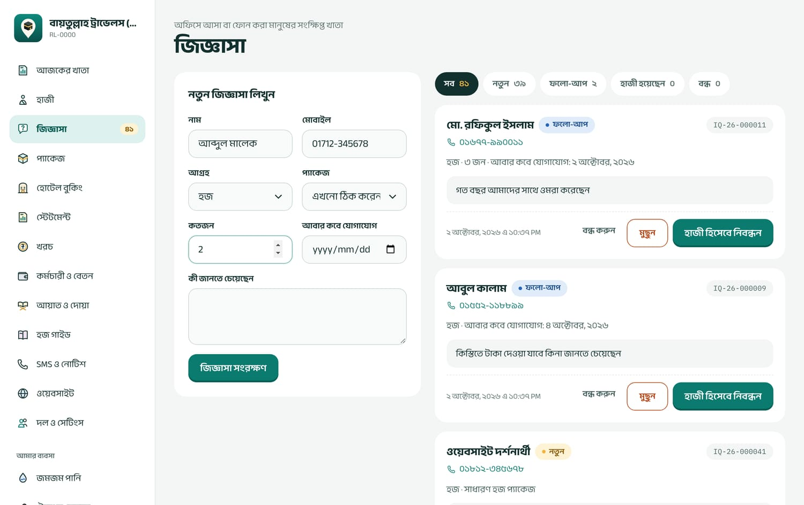
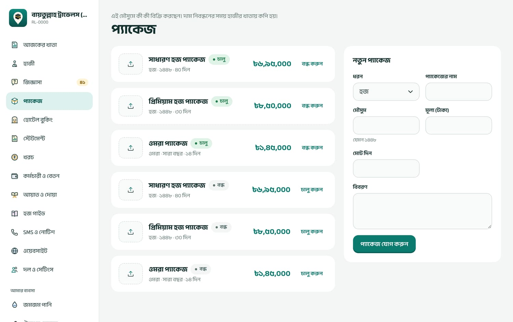
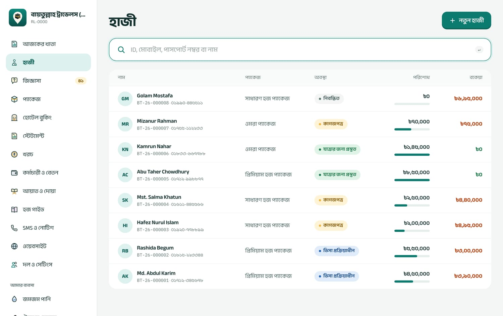
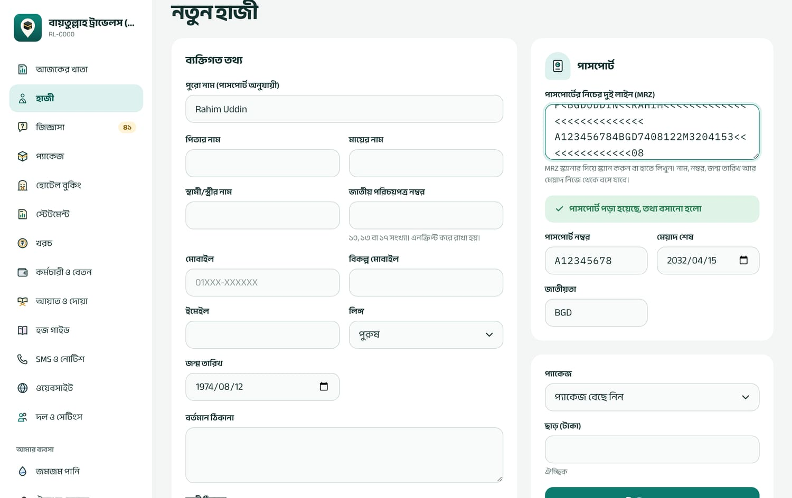
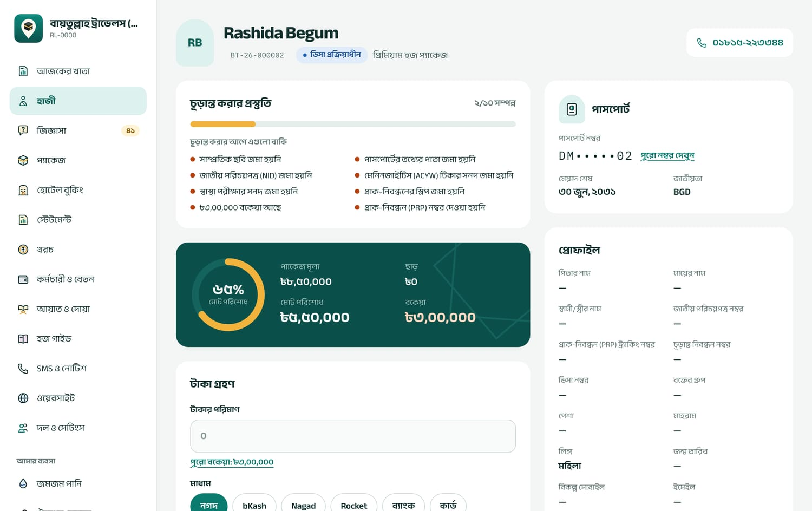
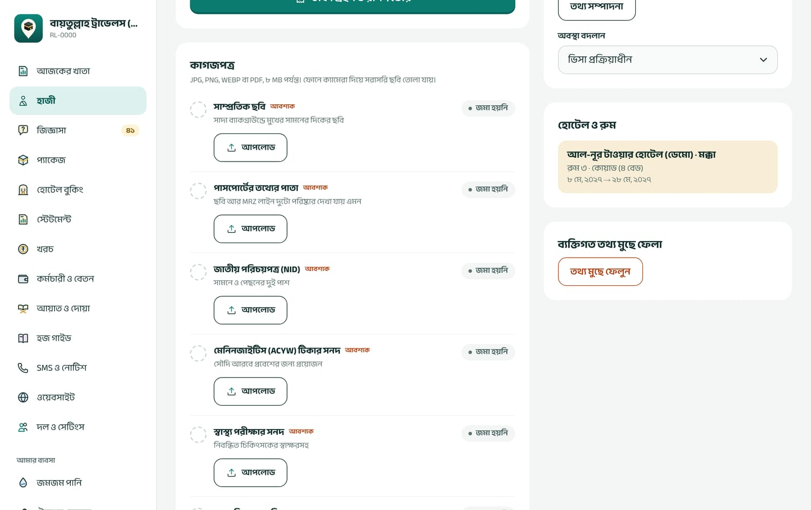
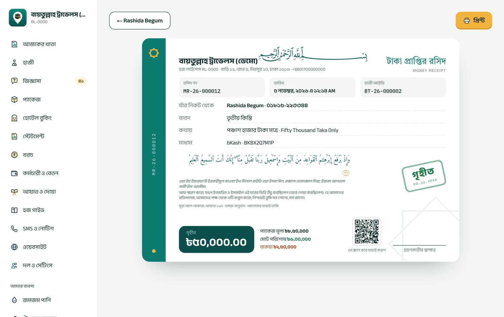
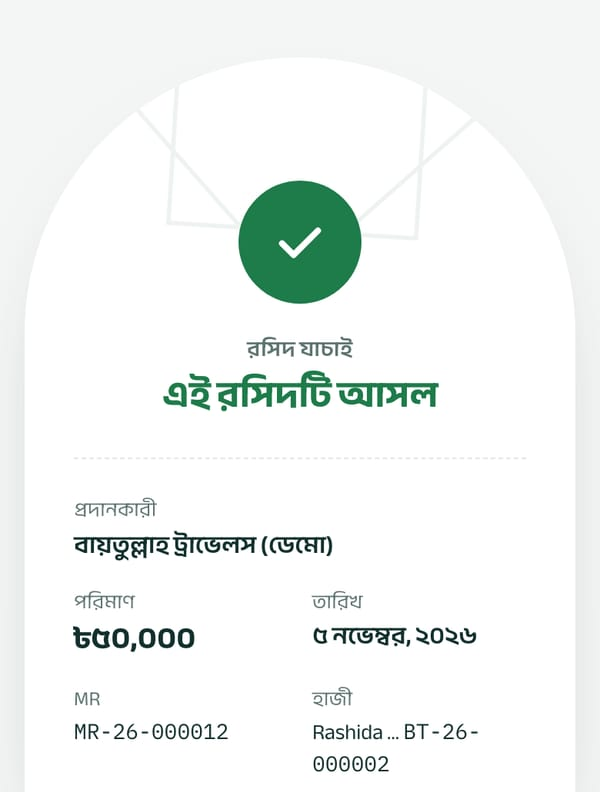
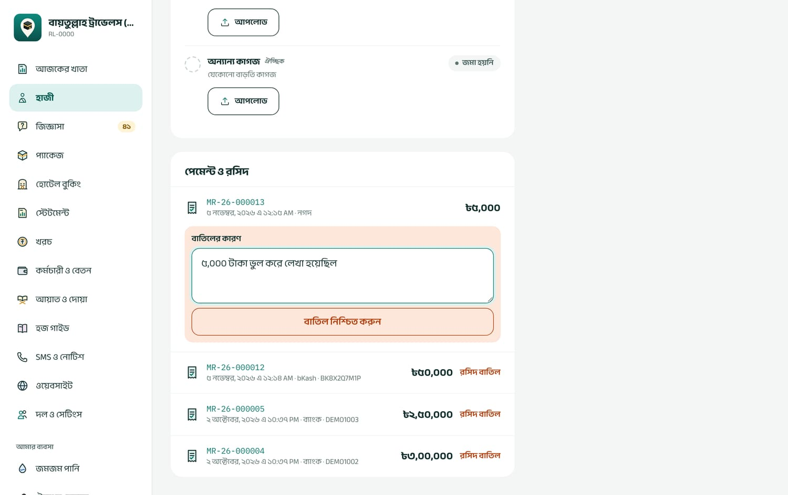
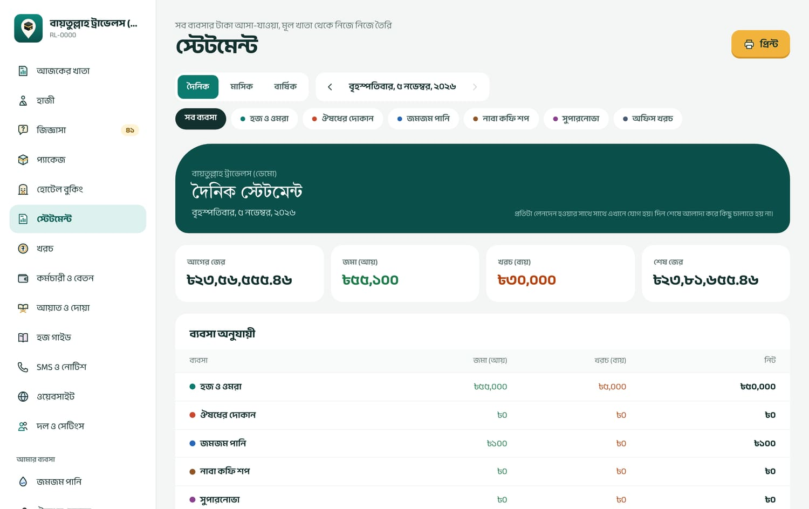

মেনু: আজকের খাতা কে দেখবেন: দোকানের লগইন ছাড়া সবাই
লগইন করলে প্রথমে এই পাতা খোলে। এক নজরে আজকের টাকা, হাজীর সংখ্যা, খোলা জিজ্ঞাসা আর প্রতিটা দোকানের আজকের বিক্রি দেখা যায়।
আজকের খাতা: বড় সবুজ কার্ডে আজ হাজীদের কাছ থেকে জমা, ডানে অন্য ব্যবসার ঘর
কোন ঘরে কী দেখায়
আজ হাজীদের কাছ থেকে জমা
আজকের সব রসিদের যোগফল (বাতিল রসিদ বাদে)। নিচে কয়টি রসিদ হয়েছে আর কোন মাধ্যমে (নগদ, bKash…) কত এসেছে।
সব ব্যবসা মিলিয়ে আজ জমা · নিট
শুধু মালিক, অ্যাডমিন ও হিসাবরক্ষক দেখেন। হজ-ওমরা, দোকান, খরচ, বেতন মিলিয়ে আজকের হিসাব। চাপ দিলে স্টেটমেন্ট খোলে।
হজ ও ওমরা
মোট কতজন হাজী নিবন্ধিত (সব অবস্থা মিলিয়ে)।
জিজ্ঞাসা
কতগুলো জিজ্ঞাসা এখনো খোলা (নতুন + ফলো-আপ)।
দোকানের ঘর
প্রতিটা দোকানের আজকের বিক্রি আর কয়টি বিক্রি হলো।
সর্বশেষ রসিদ
শেষ ৬টি রসিদ। বাতিল রসিদ কাটা দাগে দেখায়।
দ্রুত কাজ: উপরের খোঁজার ঘরে হাজীর ID, মোবাইল বা পাসপোর্ট নম্বর লিখলেই হাজীকে পাওয়া যায়। “টাকা গ্রহণ করুন” বোতাম হাজীর তালিকায় নিয়ে যায়; হাজী খুঁজে তাঁর পাতায় টাকা নিন।
৪জিজ্ঞাসা (ফোন বা অফিসে আসা মানুষ)
মেনু: জিজ্ঞাসা কে পারবেন: সবাই লিখতে পারেন; মুছতে পারেন শুধু মালিক ও অ্যাডমিন
কেউ ফোন করলে বা অফিসে এসে খোঁজ নিলে তাঁর নাম-নম্বর এখানে লিখে রাখুন। পরে তিনি হাজী হলে এক চাপে নিবন্ধন হয়, নাম-নম্বর আবার লিখতে হয় না। মেনুর পাশে সংখ্যাটা বলে কতগুলো জিজ্ঞাসা এখনো খোলা।

বাঁয়ে নতুন জিজ্ঞাসা লেখার ঘর, ডানে তালিকা আর অবস্থা অনুযায়ী ছাঁকনি
নতুন জিজ্ঞাসা লিখবেন যেভাবে
নাম আর মোবাইল লিখুন (দুটোই লাগবে; মোবাইল বাংলাদেশি নম্বর হতে হবে)।
আগ্রহ বেছে নিন: হজ, ওমরা বা অন্যান্য। চাইলে প্যাকেজ আর কতজন যাবেন দিন।
আবার ফোন করার কথা থাকলে আবার কবে যোগাযোগ তারিখ দিন। তারিখ দিলে জিজ্ঞাসাটা “ফলো-আপ” হিসেবে তালিকার উপরে থাকে।
কী জানতে চেয়েছেন ঘরে সংক্ষেপে লিখুন, তারপর জিজ্ঞাসা সংরক্ষণ চাপুন। একটা নম্বর তৈরি হয়, যেমন IQ-26-000001।
জিজ্ঞাসার অবস্থা
নতুন
সবে লেখা হয়েছে।
ফলো-আপ
আবার যোগাযোগের তারিখ দেওয়া আছে।
হাজী হয়েছেন
নিবন্ধন হয়ে গেছে। এরপর আর বদলানো যায় না।
বন্ধ
আর আগ্রহ নেই। “আবার খুলুন” চাপলে আবার “নতুন” হয়।
জিজ্ঞাসা থেকে হাজী নিবন্ধন
কার্ডের হাজী হিসেবে নিবন্ধন চাপুন। নাম, মোবাইল আর প্যাকেজ বসানো অবস্থায় নিবন্ধন ফর্ম খোলে। সংরক্ষণ করলে জিজ্ঞাসাটা নিজে থেকেই “হাজী হয়েছেন” হয়ে যায়। কতজন ঘরে একাধিক থাকলে শুধু প্রথমজন যুক্ত হন; বাকিদের “নতুন হাজী” দিয়ে আলাদা নিবন্ধন করুন।
ওয়েবসাইট থেকে আসা জিজ্ঞাসা
আপনার ওয়েবসাইটের “আমরা আপনাকে ফোন করব” ফর্ম কেউ পূরণ করলে সেটা এই তালিকায় “নতুন” হিসেবে আসে, নোটের শুরুতে লেখা থাকে [ওয়েবসাইট]। দর্শনার্থী তাঁর জিজ্ঞাসা নম্বর দেখতে পান।
ভুল হলে: জিজ্ঞাসা সম্পাদনার ব্যবস্থা নেই। ভুল লিখে ফেললে মালিক বা অ্যাডমিন মুছুন চেপে স্থায়ীভাবে মুছে নতুন করে লিখুন। মুছে ফেলা আর ফেরত আনা যায় না।
আবার যোগাযোগের তারিখ শুধু লেখার সময় দেওয়া যায়, পরে বদলানো যায় না, আর সফটওয়্যার নিজে মনে করিয়ে দেয় না। প্রতিদিন সকালে “ফলো-আপ” ছাঁকনি দেখে ফোন করুন।
৫প্যাকেজ
মেনু: প্যাকেজ কে পারবেন: দেখতে সবাই; বানাতে, বন্ধ-চালু করতে আর ছবি দিতে শুধু মালিক ও অ্যাডমিন
এই মৌসুমে আপনি যেসব হজ ও ওমরা প্যাকেজ বিক্রি করছেন, সেগুলো এখানে থাকে। হাজী নিবন্ধনের সময় প্যাকেজের দাম হাজীর খাতায় কপি হয়।

প্যাকেজের পাতা: বাঁয়ে নতুন প্যাকেজ, ডানে চালু ও বন্ধ প্যাকেজের তালিকা
নতুন প্যাকেজ
ধরন বেছে নিন: হজ বা ওমরা।
প্যাকেজের নাম, মৌসুম (যেমন ১৪৪৮), মূল্য (টাকা) আর চাইলে মোট দিন দিন।
বিবরণ ঘরে কী কী থাকছে লিখুন: হোটেল, বিমান, খাবার, জিয়ারত ইত্যাদি। এই লেখাই ওয়েবসাইটেও দেখায়।
প্যাকেজ যোগ করুন চাপুন। ছবির ঘরে চাপ দিয়ে ওয়েবসাইটের জন্য ছবি দিতে পারেন (JPG, PNG বা WEBP)।
সাবধানে দাম দিন। প্যাকেজ সংরক্ষণের পর নাম, দাম, মৌসুম বা দিন আর বদলানো যায় না। ভুল হলে সঠিক তথ্য দিয়ে নতুন প্যাকেজ বানান, আর পুরোনোটা বন্ধ করুন।
প্যাকেজ বন্ধ বা চালু
বন্ধ করুন চাপলে প্যাকেজটা নতুন নিবন্ধন, জিজ্ঞাসা আর ওয়েবসাইটের ফর্ম থেকে সরে যায়। আগে থেকে যাঁরা এই প্যাকেজে আছেন তাঁদের হিসাবে কিছু বদলায় না। চালু করুন চাপলে আবার ফিরে আসে।
প্যাকেজের দাম শুধু টাকায় (BDT) রাখা হয়। আসন সংখ্যার হিসাব রাখার ঘর নেই।
৬হাজী: নিবন্ধন, পাসপোর্ট আর কাগজপত্র
মেনু: হাজী কে পারবেন: অফিসের সবাই নিবন্ধন, সম্পাদনা আর কাগজ আপলোড করতে পারেন

হাজীর তালিকা: প্যাকেজ, অবস্থা, কত শতাংশ পরিশোধ আর বকেয়া (লাল) এক সারিতে
হাজী খোঁজা
তালিকার উপরের ঘরে হাজীর ID (যেমন BT-26-000008), মোবাইল, পুরো পাসপোর্ট নম্বর, NID বা নামের অংশ (অন্তত ২ অক্ষর) লিখুন। তালিকায় নতুন ১০০ জন দেখায়; পুরোনো কাউকে খুঁজতে খোঁজার ঘর ব্যবহার করুন।
৬.১ নতুন হাজী নিবন্ধন
নতুন হাজী বোতাম চাপুন। অন্তত একটা প্যাকেজ চালু না থাকলে আগে প্যাকেজ বানাতে বলবে।

পাসপোর্টের নিচের দুই লাইন (MRZ) দিলে নাম, নম্বর, জন্ম তারিখ, মেয়াদ নিজে থেকে বসে যায়
পাসপোর্ট অংশে MRZ ঘরে পাসপোর্টের নিচের দুই লাইন স্ক্যানার দিয়ে স্ক্যান করুন বা হাতে লিখুন। সবুজ লেখা “পাসপোর্ট পড়া হয়েছে, তথ্য বসানো হলো” এলে নাম, পাসপোর্ট নম্বর, জন্ম তারিখ, লিঙ্গ, মেয়াদ আর জাতীয়তা নিজে থেকে পূরণ হয়।
ব্যক্তিগত তথ্য দেখে নিন। লাগবেই: পুরো নাম (পাসপোর্ট অনুযায়ী) আর মোবাইল। বাকিগুলো (পিতা-মাতা, NID, ঠিকানা, রক্তের গ্রুপ, PRP নম্বর, জরুরি যোগাযোগ) যত বেশি দেবেন, পরে তত কাজে আসবে।
প্যাকেজ বেছে নিন। মালিক, অ্যাডমিন বা হিসাবরক্ষক চাইলে ছাড় (টাকা) দিতে পারেন।
হাজী নিবন্ধন করুন চাপুন। হাজীর নিজের পাতা খোলে, আর একটা ID তৈরি হয় (আপনার এজেন্সির অক্ষর-বছর-ক্রমিক, যেমন BT-26-000009)।
প্যাকেজ আর ছাড় নিবন্ধনের সময়েই ঠিক করুন। পরে হাজীর প্যাকেজ, দাম বা ছাড় বদলানো যায় না। ভুল হলে দেখুন অধ্যায় ১৯: ভুল এন্ট্রি ঠিক করা।
পাসপোর্ট পড়তে না পারলে
“দুই লাইনে ৪৪টি করে অক্ষর হতে হবে”
MRZ-এর কোনো অক্ষর বাদ পড়েছে বা বেশি হয়েছে। আবার স্ক্যান করুন।
“পাসপোর্ট লাইনে কোথাও ভুল আছে”
পাসপোর্টের নিজস্ব যাচাই-সংখ্যা মেলেনি, মানে কোথাও একটা অক্ষর ভুল পড়েছে। আবার স্ক্যান করুন, বা নম্বর আর মেয়াদ হাতে লিখুন।
“এই পাসপোর্টে আগে থেকেই একজন হাজী আছেন”
একই পাসপোর্ট আগে নিবন্ধিত। তিনি আবার নতুন সফরে যাচ্ছেন হলে “হ্যাঁ, নতুন সফরে নিবন্ধন করুন” চাপুন; না হলে আগের হাজীকেই খুঁজে নিন।
“হাজী-সীমা পূর্ণ হয়েছে”
আপনার প্ল্যানে এ বছর যতজন হাজী রাখা যায়, তা শেষ। বড় প্ল্যানের জন্য যোগাযোগ করুন।
NID আর পাসপোর্ট নম্বর গোপন রেখে (এনক্রিপ্ট করে) সংরক্ষণ করা হয়, পর্দায় আংশিক দেখায় (যেমন A0•••••67)। পুরো নম্বর দেখতে পারেন শুধু মালিক, অ্যাডমিন বা হিসাবরক্ষক, আর কে কখন দেখলেন তা লেখা থাকে।
৬.২ হাজীর পাতা

হাজীর পাতার উপরের অংশ: যাত্রার প্রস্তুতি, পাসপোর্ট আর টাকার হিসাব
চূড়ান্ত করার প্রস্তুতি
এই ঘর বলে দেয় যাত্রার আগে আর কী বাকি, যেমন “মেনিনজাইটিস টিকার সনদ জমা হয়নি”, “পাসপোর্টের মেয়াদ যাত্রার পর অন্তত ৬ মাস থাকতে হবে”, “৳১,৯০,০০০ বকেয়া আছে”, হজের ক্ষেত্রে “প্রাক-নিবন্ধন (PRP) নম্বর দেওয়া হয়নি”। সব ঠিক হলে লেখা আসে “সব কাগজ ও টাকা ঠিক আছে, যাত্রার জন্য প্রস্তুত করা যাবে”।
পাসপোর্টের ৬ মাসের হিসাব আজকের তারিখ থেকে গোনা হয়, যাত্রার তারিখ থেকে নয়। যাত্রা কয়েক মাস পরে হলে নিজে একবার মিলিয়ে নিন।
তথ্য সম্পাদনা
প্রোফাইল ঘরে তথ্য সম্পাদনা চাপলে নিবন্ধনের সব ঘর আর বাড়তি কিছু ঘর খোলে: পেশা, চূড়ান্ত নিবন্ধন নম্বর, ভিসা নম্বর, আর মহিলা হাজীর জন্য মাহরামের নাম ও সম্পর্ক। বদলে তথ্য সংরক্ষণ চাপুন।
যে ঘরে আগে কিছু লেখা আছে, তা ফাঁকা করা যায় না, শুধু নতুন লেখা দিয়ে বদলানো যায়। NID-এর ঘর ফাঁকা রাখলে আগের NID থেকে যায়। পাসপোর্ট একবার দেওয়ার পর এই পাতা থেকে বদলানো যায় না।
অবস্থা (স্ট্যাটাস)
অবস্থা বদলান থেকে হাজীর অবস্থা বদলান। ক্রম:
নিবন্ধিত
কাগজপত্র
ভিসা প্রক্রিয়াধীন
যাত্রার জন্য প্রস্তুত
সফরে আছেন
সফর সম্পন্ন
আর আছে বাতিল। প্রথম টাকা জমা হলে “নিবন্ধিত” হাজী নিজে থেকেই “কাগজপত্র” হয়ে যান। বাকি বদল আপনাকেই করতে হয়।
“যাত্রার জন্য প্রস্তুত”, “সফরে আছেন” বা “সফর সম্পন্ন” করতে হলে প্রস্তুতির সব শর্ত পূরণ থাকতে হবে। না থাকলে লেখা আসে “সব শর্ত পূরণ না হওয়ায় এই অবস্থায় নেওয়া যাচ্ছে না।” তবু জরুরি দরকারে মালিক বা অ্যাডমিন কেন ব্যতিক্রম করছেন লিখে কারণসহ নিশ্চিত করুন চাপতে পারেন; কারণটা খাতায় থেকে যায়।
৬.৩ কাগজপত্র আপলোড ও যাচাই

কাগজপত্রের ঘর: কোনটা জমা হয়েছে, কোনটা যাচাই বাকি, কোনটা বাতিল
প্রতিটা কাগজের পাশে আপলোড চাপুন (ফোনে ক্যামেরা দিয়ে সরাসরি ছবি তোলা যায়)। JPG, PNG, WEBP বা PDF, প্রতিটা ৮ MB পর্যন্ত।
কাগজ
লাগবে কি না
কার জন্য
সাম্প্রতিক ছবি
আবশ্যক
হজ ও ওমরা (শুধু ছবি, PDF নয়)
পাসপোর্টের তথ্যের পাতা
আবশ্যক
হজ ও ওমরা
জাতীয় পরিচয়পত্র (NID)
আবশ্যক
১৮ বছর বা বেশি
জন্ম নিবন্ধন সনদ
আবশ্যক
১৮ বছরের কম (NID-এর বদলে)
মেনিনজাইটিস (ACYW) টিকার সনদ
আবশ্যক
হজ ও ওমরা
স্বাস্থ্য পরীক্ষার সনদ
আবশ্যক
শুধু হজ
প্রাক-নিবন্ধনের স্লিপ
আবশ্যক
শুধু হজ
চূড়ান্ত নিবন্ধন / ব্যাংক জমার রসিদ
ঐচ্ছিক
শুধু হজ
মাহরামের সম্পর্কের প্রমাণ
ঐচ্ছিক
মহিলা হাজী
অন্যান্য কাগজ
ঐচ্ছিক
যে কেউ, যতবার খুশি
যাচাই করা
কাগজ আপলোডের পর অবস্থা হয় যাচাই বাকি। মালিক, অ্যাডমিন, হিসাবরক্ষক বা স্টাফ দেখুন চেপে কাগজটা খুলে দেখবেন, তারপর:
যাচাই ঠিক আছে: পাসপোর্ট আর টিকার সনদের ক্ষেত্রে আগে মেয়াদ শেষের তারিখ চাইবে।
বাতিল করুন: কারণ লিখতে হবে (হাজীকে জানানো হবে)। পরে সঠিক কাগজ আবার আপলোড করুন।
ভুল কাগজ দিলে: কোনো কাগজ মোছা যায় না। সঠিকটা আবার আপলোড করুন। সবশেষ আপলোডটাই গোনা হয়, আগেরগুলো “আগের আপলোড” তালিকায় থেকে যায়। যাচাই হয়ে যাওয়া কাগজ বদলাতে নতুন করে দিন চাপুন।
আপনার প্ল্যানে ফাইল রাখার জায়গা সীমিত (সাধারণত ২ GB)। জায়গা ভরে গেলে লেখা আসবে “আপনার প্ল্যানের জায়গা ভরে গেছে”। ফোনে তোলা খুব বড় ছবির বদলে মাঝারি মানের ছবি দিন।
৬.৪ হাজীর তথ্য স্থায়ীভাবে মুছে ফেলা
কেউ নিজের তথ্য মুছে ফেলতে বললে মালিক বা অ্যাডমিন হাজীর পাতার নিচে ব্যক্তিগত তথ্য মুছে ফেলা অংশে হাজীর ID লিখে স্থায়ীভাবে মুছুন চাপবেন। নাম, যোগাযোগ, পরিবার, NID-পাসপোর্ট, সব কাগজ আর পাঠানো SMS মুছে যায়। টাকার রসিদ হিসাবের জন্য ID দিয়ে থেকে যায়, নামের জায়গায় “—” দেখায়।
এটা আর কখনো ফেরানো যায় না। মুছে ফেলার পর ওই হাজীর খাতায় নতুন কিছুই যোগ করা যায় না।
৭টাকা গ্রহণ, রসিদ, কিস্তি আর বাতিল
কোথায়: হাজীর পাতায় “টাকা গ্রহণ” ঘর কে পারবেন: টাকা নিতে সবাই; রসিদ বাতিল, ছাড় আর বকেয়ার বেশি টাকা নিতে শুধু মালিক, অ্যাডমিন ও হিসাবরক্ষক
টাকার পরিমাণ লিখুন। পুরো বকেয়া একবারে নিলে “পুরো বকেয়া: ৳…” লেখায় চাপ দিন, অঙ্কটা বসে যাবে। ১,৫০,০০০ বা ১৫০০০০ যেভাবে খুশি লিখতে পারেন, বাংলা সংখ্যাও চলে।
মাধ্যম বেছে নিন: নগদ, bKash, Nagad, Rocket, ব্যাংক, কার্ড বা অন্যান্য। নগদ ছাড়া সবক্ষেত্রে ট্রানজেকশন / চেক নম্বর লাগবে।
বাবদ ঘরে লিখতে পারেন “দ্বিতীয় কিস্তি”, “ভিসা ফি” ইত্যাদি।
টাকা গ্রহণ ও রসিদ তৈরি চাপুন। “রসিদ MR-26-000012 তৈরি হয়েছে” এলে রসিদ দেখুন চেপে প্রিন্ট করুন।
কিস্তি মানে একই হাজীর কাছ থেকে বারবার টাকা নেওয়া। প্রতিবার আলাদা রসিদ হয়, বকেয়া নিজে থেকে কমে। কিস্তির আলাদা তালিকা বা তারিখ ঠিক করার ব্যবস্থা নেই।
SMS চালু থাকলে প্রতিটা জমার পর হাজীর ফোনে SMS যায়: কত জমা হলো, রসিদ নম্বর, কত বাকি, আর রসিদ যাচাইয়ের লিংক।

টাকা প্রাপ্তির রসিদ: অঙ্ক কথায়, মোট পরিশোধ, বকেয়া আর যাচাইয়ের QR কোড
রসিদে যা থাকে
এজেন্সির নাম, লাইসেন্স, ঠিকানা; রসিদ নম্বর, তারিখ, হাজীর ID; কার কাছ থেকে, কী বাবদ, অঙ্ক কথায় (বাংলা ও ইংরেজি), মাধ্যম। নিচে প্যাকেজ মূল্য, ছাড়, মোট পরিশোধ, বকেয়া আর QR কোড। প্রিন্ট চাপলে শুধু রসিদটাই প্রিন্ট হয় (আধা পাতা, A5 মাপ)।
QR দিয়ে রসিদ যাচাই
হাজী বা অন্য কেউ ফোনের ক্যামেরায় রসিদের QR স্ক্যান করলে একটা পাতা খোলে, লগইন লাগে না। সেখানে দেখায় “এই রসিদটি আসল”, “এই রসিদটি বাতিল করা হয়েছে” বা “এই রসিদ আমাদের খাতায় পাওয়া যায়নি”। এতে নকল রসিদ ধরা পড়ে।

ফোনে QR স্ক্যান করলে রসিদ যাচাইয়ের পাতা
৭.২ টাকার হিসাব কীভাবে হয়
পরিশোধ = হাজীর সব রসিদের যোগফল (বাতিল রসিদ বাদে)
বকেয়া = প্যাকেজ মূল্য − ছাড় − পরিশোধ (শূন্যের নিচে নামে না)
বকেয়ার চেয়ে বেশি টাকা লিখলে সফটওয়্যার থামায়: “বকেয়ার চেয়ে বেশি। বকেয়া আছে ৳১,৯০,০০০।” মালিক, অ্যাডমিন বা হিসাবরক্ষক সত্যিই বেশি নিতে চাইলে অতিরিক্ত টাকা নিতে চাই টিক দিয়ে আবার জমা দিতে পারেন; তখন বকেয়া ৳০ আর “অতিরিক্ত জমা” দেখায়।
সব হিসাব পয়সা পর্যন্ত মিলিয়ে করা হয়, কোথাও গোল করে (রাউন্ড) কাটা হয় না। দশমিকের পর দুই ঘরের বেশি লিখলে লেখা আসে “সঠিক টাকার অঙ্ক দিন”।
৭.৩ ভুল রসিদ বাতিল করা
রসিদ একবার তৈরি হলে অঙ্ক, মাধ্যম, তারিখ কেউ বদলাতে বা মুছতে পারে না, মালিকও না। এতে হিসাবে কারচুপির সুযোগ থাকে না। ভুল হলে রসিদটা বাতিল করে সঠিক অঙ্কে নতুন রসিদ করতে হয়।

“পেমেন্ট ও রসিদ” তালিকায় রসিদ বাতিলের ঘর: কারণ লিখে নিশ্চিত করুন
হাজীর পাতায় পেমেন্ট ও রসিদ তালিকায় ভুল রসিদের পাশে রসিদ বাতিল চাপুন (মালিক, অ্যাডমিন বা হিসাবরক্ষক)।
বাতিলের কারণ লিখুন, যেমন “৫০,০০০-এর জায়গায় ৫,০০,০০০ লেখা হয়েছিল”।
বাতিল নিশ্চিত করুন চাপুন।
তারপর “টাকা গ্রহণ” থেকে সঠিক অঙ্কে নতুন রসিদ করুন।
বাতিলের পর:
রসিদটা তালিকায় কাটা দাগে থাকে, কারণসহ। প্রিন্টে লাল “বাতিল” সিল পড়ে, QR যাচাইয়েও “বাতিল” দেখায়।
হাজীর বকেয়া আবার বাড়ে।
যেদিন বাতিল করলেন, সেদিনের স্টেটমেন্টে “হাজীর রসিদ বাতিল” নামে খরচের ঘরে অঙ্কটা ওঠে। আগের দিনের হিসাব বদলায় না।
কে, কখন, কেন বাতিল করলেন সব লেখা থাকে।
বাতিল রসিদ আর ফেরত আনা যায় না। বাতিলের আগে ঠিক রসিদটা বেছেছেন কি না দেখে নিন।
৭.৪ হাজী সফর বাতিল করলে বা টাকা ফেরত
সফটওয়্যারে আলাদা “টাকা ফেরত” (রিফান্ড) ব্যবস্থা নেই। হাজীর অবস্থা “বাতিল” করলে শুধু নতুন টাকা নেওয়া বন্ধ হয়, জমা টাকা নিজে থেকে কমে না। আমাদের পরামর্শ:
পুরো রসিদের টাকা ফেরত দিলে: ওই রসিদটা বাতিল করুন, কারণে লিখুন “টাকা ফেরত দেওয়া হয়েছে”। হাজীর হিসাব আর স্টেটমেন্ট দুটোই ঠিক থাকে।
আংশিক ফেরত দিলে: খরচ পাতায় “হাজীকে টাকা ফেরত, ID …” লিখে খরচ হিসেবে তুলুন। এতে স্টেটমেন্ট ঠিক থাকে, তবে হাজীর পাতার “পরিশোধ” বদলায় না, তাই হাজীর নোটে ফেরতের কথা লিখে রাখুন।
৮স্টেটমেন্ট: দিন, মাস আর বছরের হিসাব
মেনু: স্টেটমেন্ট কে দেখবেন: মালিক, অ্যাডমিন ও হিসাবরক্ষক
এটা আপনার পুরো ব্যবসার নগদ জমা-খরচের খাতা: হাজীদের টাকা, দোকানের বিক্রি, অফিস খরচ, বেতন সব এক জায়গায়। প্রতিটা লেনদেন হওয়ার সাথে সাথে এখানে যোগ হয়, দিন শেষে আলাদা কিছু করতে হয় না।

দৈনিক স্টেটমেন্ট: আগের জের, জমা, খরচ, শেষ জের আর সব লেনদেন
ব্যবহার
উপরে দৈনিক / মাসিক / বার্ষিক বেছে নিন। আগের / পরের দিয়ে দিন বা মাস বদলান।
সব ব্যবসা, হজ ও ওমরা, অফিস খরচ বা কোনো দোকান বেছে শুধু সেটার হিসাব দেখুন।
প্রিন্ট চাপলে কাগজে বা PDF হিসেবে রাখা যায়।
কোন অঙ্ক কী
আগের জের = শুরু থেকে এই সময়ের আগ পর্যন্ত সব জমা − সব খরচ
জমা (আয়) = এই সময়ে যত টাকা এসেছে
খরচ (ব্যয়) = এই সময়ে যত টাকা গেছে (রসিদ বাতিলও এখানে)